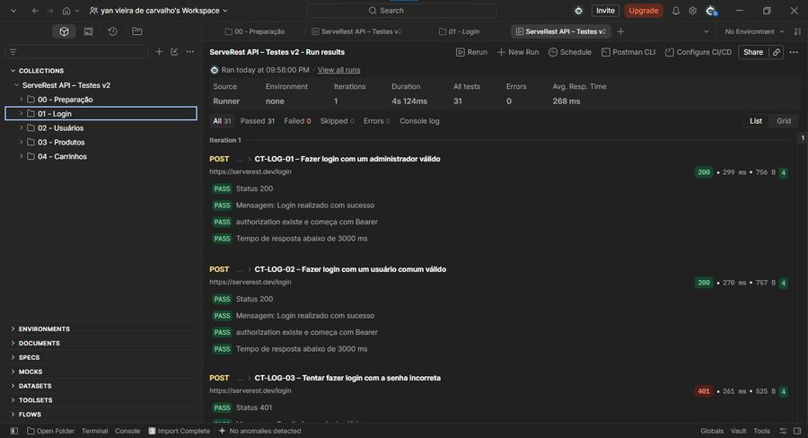
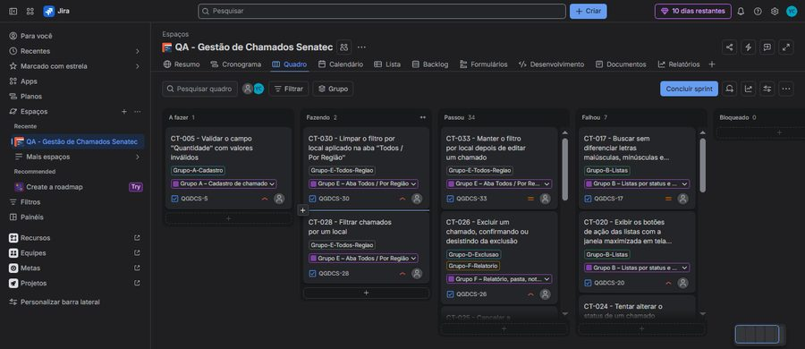
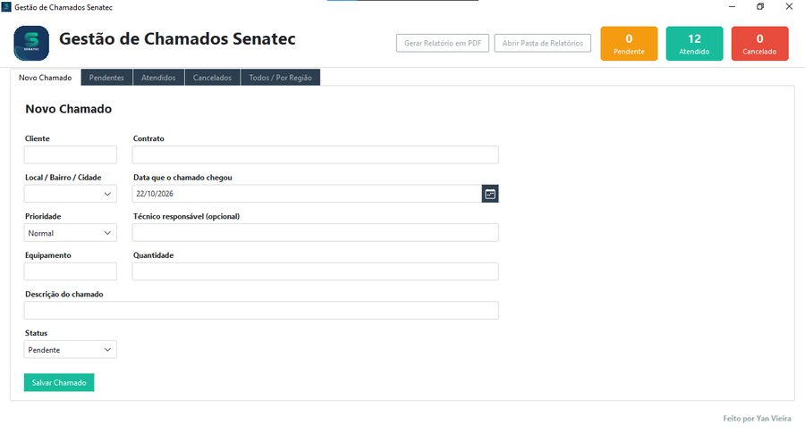

Testes manuais
Funcional, exploratório e regressão
QA Júnior | Testes manuais e de API
Testes de software, análise de falhas e documentação para criar experiências melhores.
Sou apaixonado por tecnologia e por construir soluções que realmente funcionam. Estou em transição para QA, com pensamento crítico e foco em descobrir onde o produto pode falhar e como deixá-lo mais confiável.
Acredito que qualidade vai além de encontrar bugs: é garantir que o usuário tenha uma experiência confiável e sem barreiras. Uso IA como apoio em cenários de teste e automação, sempre validando os resultados com senso crítico.
</>Melhores testes.
Melhores experiências.
Funcional, exploratório e regressão
BDD/Gherkin, valor limite, tabela de decisão
Postman, status codes e respostas
Reports claros, com evidências
Sprints, épicos, tasks e bugs
Versionamento e repositórios
Cypress, JavaScript e Python
Plano de testes, matriz e relatório final



Automação de orçamentos e planilhas com VBA, sistema de chamados com apoio de IA, notas fiscais e suporte de TI.
Estou em busca de novas oportunidades para aplicar meus conhecimentos, aprender e crescer na área de tecnologia.